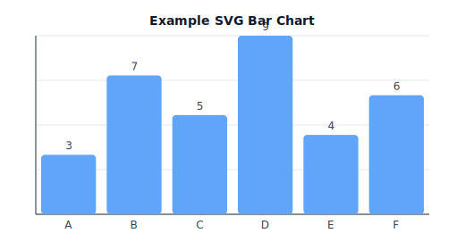

from xml.etree.ElementTree import Element, SubElement, tostring
from IPython.display import SVG, display # Optional: for Jupyter inline display
def svg_bar_chart(
values, labels=None, width=520, height=280, margin=40, colors=None, title=None
):
"""Return an SVG string for a responsive bar chart."""
labels = labels or [str(i+1) for i in range(len(values))]
max_v = max(values) if values else 1
plot_w = width - 2 * margin
plot_h = height - 2 * margin
bar_w = plot_w / max(len(values), 1)
svg = Element("svg", {
"xmlns": "http://www.w3.org/2000/svg",
"viewBox": f"0 0 {width} {height}",
"width": "100%" # responsive
})
# Styles (scoped to this SVG)
style = SubElement(svg, "style")
style.text = """
.axis { stroke: #1f2937; stroke-width: 1; }
.grid { stroke: #e5e7eb; stroke-width: 1; }
.label { fill: #374151; font: 12px/1.2 DejaVu Sans, Arial; }
.title { fill: #111827; font: bold 14px/1.2 DejaVu Sans, Arial; }
"""
# Background
SubElement(svg, "rect", {"x": "0", "y": "0", "width": str(width), "height": str(height), "fill": "#ffffff"})
# Grid (y)
for gy in range(5):
y = margin + (gy * plot_h / 4.0)
SubElement(svg, "line", {"x1": str(margin), "y1": f"{y:.2f}",
"x2": str(width - margin), "y2": f"{y:.2f}",
"class": "grid"})
# Axes
SubElement(svg, "line", {"x1": str(margin), "y1": str(height - margin),
"x2": str(width - margin), "y2": str(height - margin),
"class": "axis"})
SubElement(svg, "line", {"x1": str(margin), "y1": str(margin),
"x2": str(margin), "y2": str(height - margin),
"class": "axis"})
# Bars
for i, v in enumerate(values):
# Height proportional to value
bh = 0 if max_v == 0 else (v / max_v) * plot_h
x = margin + i * bar_w + 6
y = (height - margin) - bh
fill = (colors[i % len(colors)] if colors else "#60a5fa") # default blue-ish
SubElement(svg, "rect", {
"x": f"{x:.2f}", "y": f"{y:.2f}",
"width": f"{bar_w - 12:.2f}", "height": f"{bh:.2f}",
"fill": fill, "rx": "4", "ry": "4"
})
# X labels
SubElement(svg, "text", {
"x": f"{x + (bar_w - 12)/2:.2f}",
"y": f"{height - margin + 16:.2f}",
"text-anchor": "middle",
"class": "label"
}).text = labels[i]
# Value labels
SubElement(svg, "text", {
"x": f"{x + (bar_w - 12)/2:.2f}",
"y": f"{y - 6:.2f}",
"text-anchor": "middle",
"class": "label"
}).text = str(v)
# Title
if title:
SubElement(svg, "text", {
"x": f"{width/2:.2f}", "y": f"{margin - 12:.2f}",
"text-anchor": "middle", "class": "title"
}).text = title
return tostring(svg, encoding="unicode")
# --- Example usage ---
vals = [3, 7, 5, 9, 4, 6]
labs = ["A", "B", "C", "D", "E", "F"]
svg_str = svg_bar_chart(vals, labs, title="Example SVG Bar Chart")
# Save to file
with open("chart.svg", "w", encoding="utf-8") as f:
f.write(svg_str)
# In JupyterLab, render inline:
display(SVG(data=svg_str))